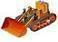

who kindly provided their commercial products to this open-source
project at no charge
This project includes software developed by other entities:
Apache Software Foundation
Dozer, http://dozer.sourceforge.net 
JideSoft, http://www.jidesoft.com,

who kindly provided
their commercial products to this open-source
project at no
charge
and GitHub, https://github.com,
the host for our
version-control repository and release infrastructure.